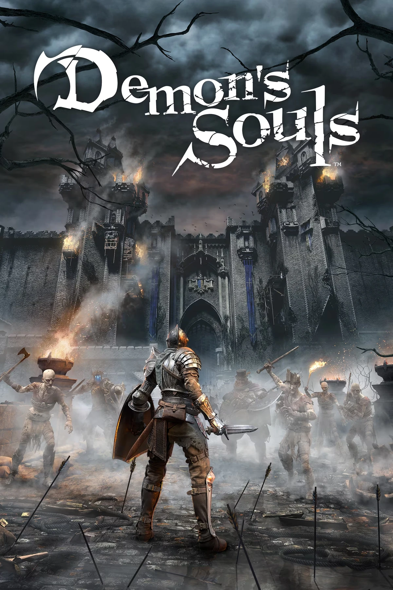
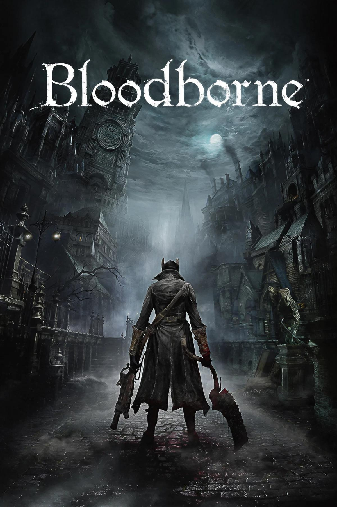

FromSoftware is a renowned Japanese video game developer celebrated for its atmospheric worlds, intricate level design, and uncompromising gameplay. Founded in 1986, the studio spent its early years creating niche titles, but it wasn't until the release of Demon's Souls in 2009 that it captured the attention of a global audience. That game, with its punishing difficulty, obscure lore, and haunting environments, laid the foundation for what would become the Soulsborne formula—an experience built on player persistence, discovery, and reward through struggle.
Building on that success, FromSoftware released Dark Souls, which became a cultural phenomenon and established the studio as a creative force. In 2015, they released Bloodborne, a gothic horror inspired evolution of the formula that emphasized faster, more aggressive combat and a deeper descent into psychological and cosmic horror. It was critically acclaimed not just for its gameplay, but for its world-building—layered with symbolism, decay, and cryptic storytelling.
Then came Elden Ring in 2022, a landmark collaboration between FromSoftware and author George R. R. Martin. It translated their signature design philosophy into a sprawling open-world format without sacrificing depth or mystery. Players were free to explore a vast, dangerous landscape full of hidden dungeons, fragmented lore, and brutal bosses, all while piecing together a narrative that rewards curiosity and persistence.
Under the leadership of Hidetaka Miyazaki, FromSoftware has carved out a unique space in the industry. Their games don't hold players' hands,they invite them to learn through failure, to explore the unknown, and to find meaning in ruins. This approach has not only earned them critical acclaim and commercial success, but has also reshaped modern game design, influencing countless other studios and titles across genres.
Hidetaka Miyazaki
Hidetaka Miyazaki is the visionary director behind FromSoftware's most acclaimed titles, known for crafting deeply atmospheric and challenging games. His work on Demon's Souls laid the foundation for a genre defined by deliberate combat and rich world-building. With Bloodborne, he introduced a faster, more aggressive take on the formula, set in a haunting, gothic nightmare. Most recently, Elden Ring expanded his design into a vast open world, combining cryptic lore with player freedom. Miyazaki's storytelling avoids exposition, urging players to uncover meaning through exploration and persistence. His games remain unforgettable journeys.

Demon's souls
Demon's Souls is a dark fantasy action RPG by FromSoftware that introduced the core mechanics of the Souls series—challenging combat, atmospheric world design, and cryptic storytelling—laying the groundwork for a new genre of tough but rewarding gameplay.

Bloodborne
Bloodborne is a gothic action RPG by FromSoftware that emphasizes fast-paced combat, Lovecraftian horror, and exploration of a cursed, nightmarish city.
Elden ring
Elden Ring is an open-world action RPG by FromSoftware, featuring challenging combat and a vast, interconnected world. Set in the mysterious Lands Between, players explore, battle powerful bosses, and uncover deep lore. Created in collaboration with George R. R. Martin, the game offers freedom of exploration and a rich, atmospheric experience that has become a hallmark of FromSoftware's design.